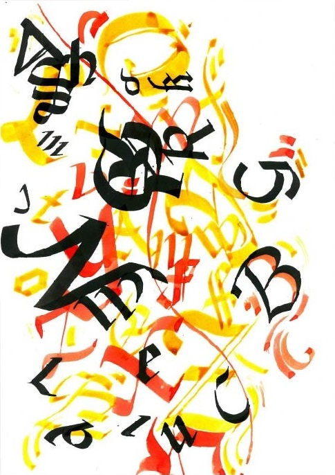
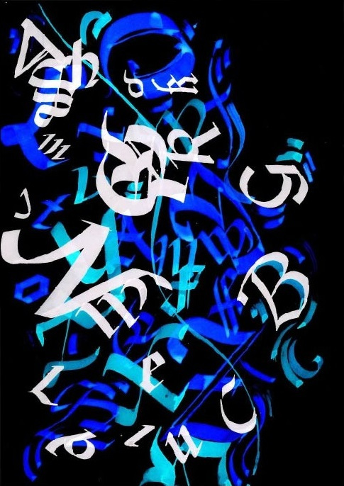
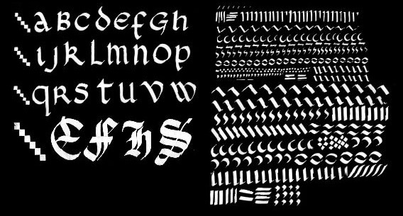
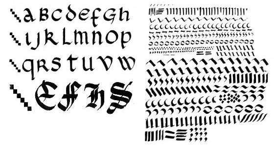

Trois styles d'écriture ont été les pilliers de ce projet : L'écriture Onciale, la Ductus de la chancelière et la Gothique. Les trois alphabets sont alliés de sorte à créer un visuel contemporain. Le résultat final exploite l'idée du mouvement et de la profondeur par la perspective atmosphérique.
   